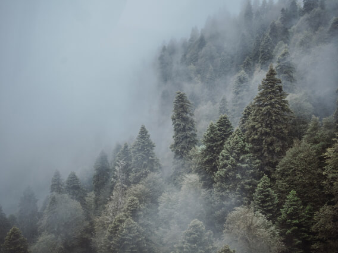
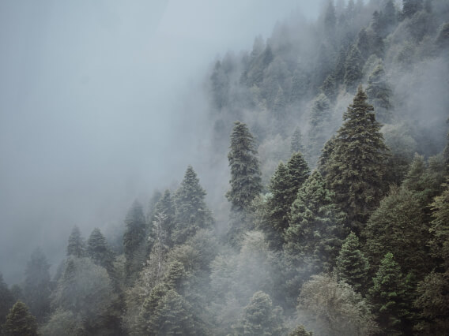
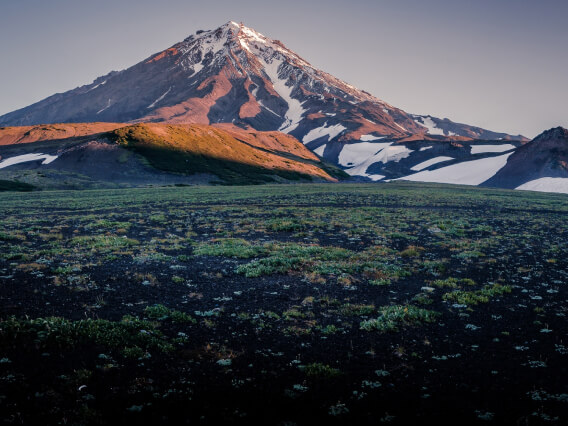
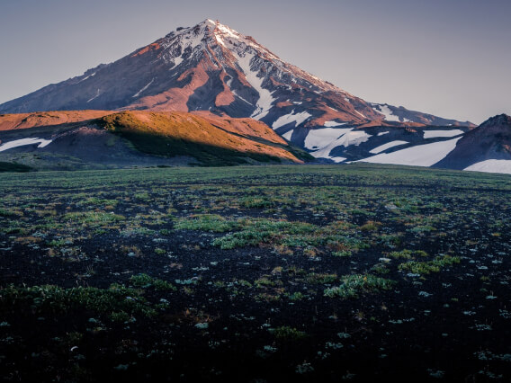

По опросам ВЦИОМ, 95% россиян мечтают куда-нибудь поехать, но только 36%
планируют
провести отпуск в родной стране. Мол, чего мы тут, дома, не видели? На самом деле, Россия — это целая
вселенная с ласковым морем юга, густыми лесами Саян и суровыми льдами плато Путорана. А ещё увидеть все
эти красоты можно без миллионов на счету, загранпаспорта и многочасовых перелетов. Как, например,
Вера
Башмакова — смелая молодая мама, которая взяла в охапку троих детей, усадила их в свою «Ладу» и проехала
20 тысяч километров по родной стране. Мы выбрали и описали некоторые интересные места, достойные
вашего
отпуска.
Здесь, посреди лесов и песчаных дюн, вы сможете увидеть два
водных
горизонта — спокойного Куршского залива с одной стороны и подёрнутого рябью волн
Балтийского
моря с другой. Уникальная природная зона на краю российского анклава.
На этом Калининградская область не заканчивается. Для путешественника
и исследователя там же по соседству — самая западная точка России, Балтийская коса, — и немецкое
наследие россыпи небольших приморских городов. Атмосфера здешних мест исключает суету, окуная в спокойствие
природы и запах стального, прохладного моря.
Почти весь полуостров находится за Полярным кругом. Саамская тундра,
от которой на юг — тайга, а на север — Ледовитый океан, прикидывающийся
Баренцевым морем.
Возможно, вы смотрели Звягинцева и даже слышали историю арктического
фестиваля в Териберке. Возможно, слово «Хибины» не осталось под снегом школьных воспоминаний об
уроках географии. Возможно, вы не интересовались пронизывающей земную кору сверхглубокой
скважиной, а от апатитов вас давно накрывает апатия. Но ваша мечта увидеть северное сияние
начинает сбываться с билетом
в Мурманск.
Алтай — одно из красивейших мест в России.
В первую очередь из-за гор: если ехать вдоль хребта, вы увидите склоны, усыпанные соснами,
горные реки и озёра. А если вы откроете в автомобиле окна, сможете познакомиться с
невидимым
чудом здешних мест — горным воздухом.
Климат на Алтае умеренный, поэтому ехать сюда лучше всего летом. Так
вы увидите всё разнообразие местной флоры и фауны. По лесам Алтая бродят лоси, над хребтами
летают орлы, а на равнинах пасутся косули. И знаменитые манулы — тоже обитатели
Алтайского
края.
Всем известен Байкал как крупнейшее озеро в мире. Многие также знают, что это самый
большой источник пресной воды и одно из красивейших мест в России.
Конечно, это всё так. Но Байкал ещё идеальное место для соревнований
по скийорингу. Это такой вид спорта, когда лыжник привязывает себя
к мотоциклу, и тандем старается развить как можно бóльшую скорость на льду. В
марте 2019 года на
фестивале «Байкальская миля» был поставлен мировой рекорд — 197.011 км/ч.
Сибирь заканчивается не на Урале, а в Карелии: образующая тайгу
сибирская лиственница не растёт западнее Водлозера. Зато здесь она вымахивает на 30 метров —
леса карельских национальных парков из-за непроходимых болот никогда не знали топора. Некоторым
соснам уже больше чем полтысячелетия. Прикоснитесь к живому существу, видевшему солнце
раньше, чем увидал его Иван Грозный. В девственном лесу на сотню километров не встретишь
тропы. А на редких тропинках деревья в паре метров от земли помечены медвежьими когтями.
Чтобы все знали, кто тут хозяин.


 



 
